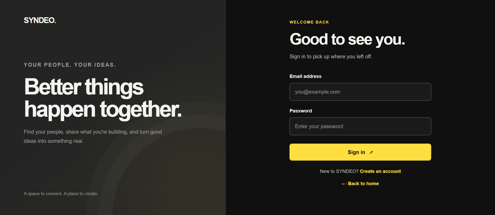
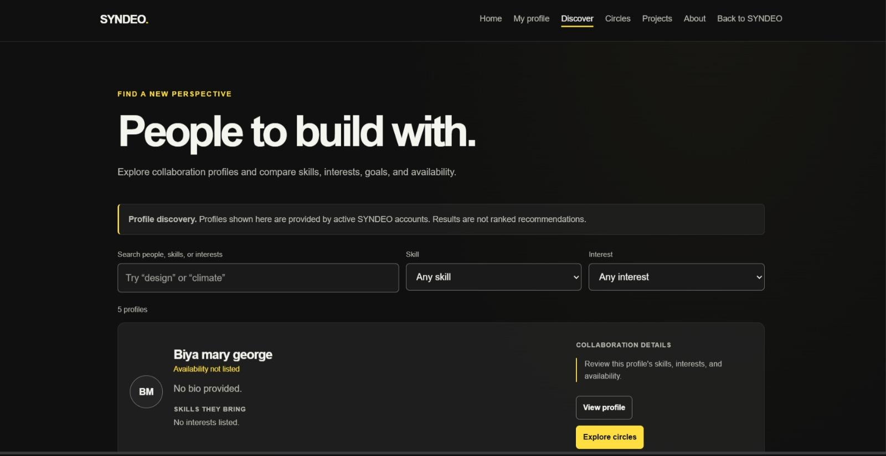
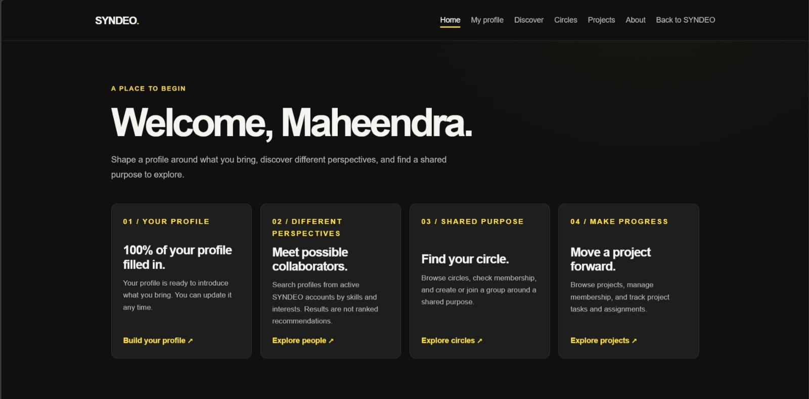
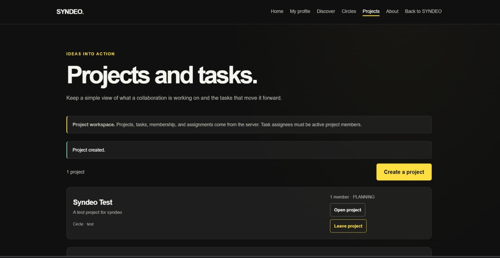
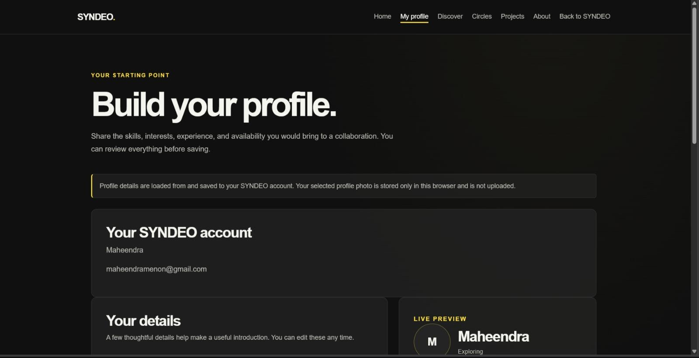
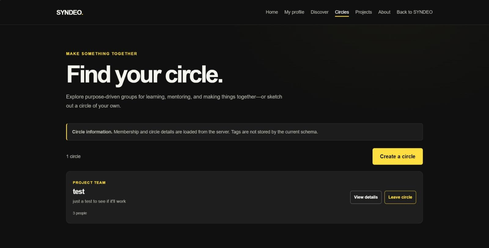

THE PROBLEM
Students often struggle to find teammates with compatible skills, interests, and availability. Collaboration can become scattered across different communication channels and personal networks.
STUDENT COLLABORATION PLATFORM
Good ideas don't happen alone.
SYNDEO is a student collaboration platform designed to help students discover potential teammates through shared skills, interests, and availability. It provides a space to organise people into circles and collaborate on projects with task tracking.
THE PROJECT
THE PROBLEM
Students often struggle to find teammates with compatible skills, interests, and availability. Collaboration can become scattered across different communication channels and personal networks.
THE SOLUTION
SYNDEO brings student discovery, profiles, circles, projects, and task organisation into one platform, giving teams a shared place to find each other and get started.
CORE FEATURES
DISCOVERY LISTS AND FILTERS PROFILES; IT DOES NOT RANK OR RECOMMEND STUDENTS.
TEAM PROJECT
SYNDEO was built as a team project. I was responsible for frontend development, shaping the user-facing experience and connecting it to the backend services.
TECHNICAL ARCHITECTURE
JWT-based authentication with BCrypt password hashing.
A LOOK INSIDE
Original SYNDEO application screenshots.
Open any image to view it at full size.






WHERE IT STANDS
The hosted SYNDEO deployment has been retired. The source code remains available on GitHub.
POSSIBLE FUTURE SCOPE